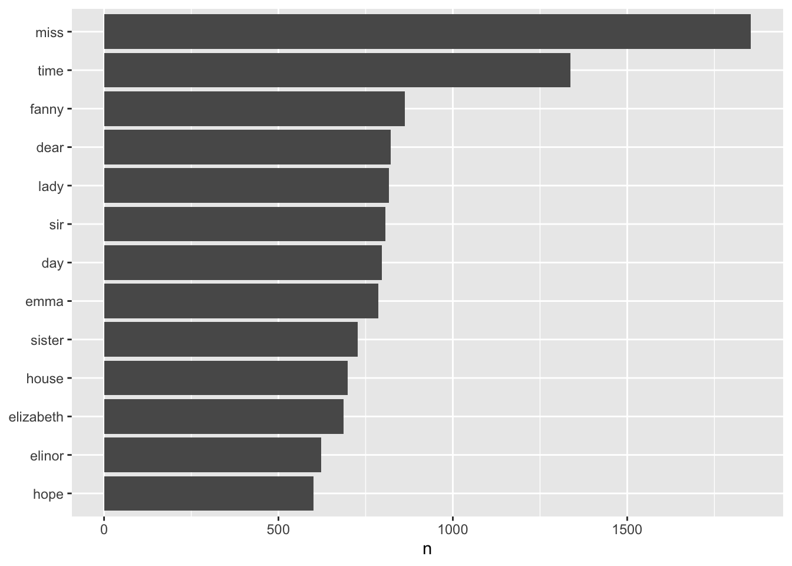

library(dplyr)
text <- c("Because I could not stop for Death -",
"He kindly stopped for me -",
"The Carriage held but just Ourselves -",
"and Immortality")
text_df<-tibble(line=1:4, text=text)Introduction
1 Background
In exploring more about text mining and text analytics, we reference the website Text Mining with R by Julia Silge and David Robinson, and highlight some key learning points from the textbook. Thereafter, we apply some of the learnings in the following self initiated projects.
2 Tidy Text Format
As described by Hadley Wickham, tidy data has a specific structure:
Each variable is a column
Each observation is a row
Each type of observational unit is a table
In the context of text, we define the tidy format as being a table with one-token-per-row, where a token is a meaningful unit of text.
2.1 Unnest token function
Most often, we are faced with paragraphs of words. But in analysing text, the form we want to create is in a token tidy text form. The textbook provided an example text written by Emily Dickinson:
This is in a tibble form, which is not yet compatible with tidy text analysis. We need to convert this so that it has one-token-per-document-per-row.
library(tidytext)
text_df |>
unnest_tokens(word, text)# A tibble: 20 × 2
line word
<int> <chr>
1 1 because
2 1 i
3 1 could
4 1 not
5 1 stop
6 1 for
7 1 death
8 2 he
9 2 kindly
10 2 stopped
11 2 for
12 2 me
13 3 the
14 3 carriage
15 3 held
16 3 but
17 3 just
18 3 ourselves
19 4 and
20 4 immortalityThe unnest_token() arguments are column names: i.e. output column name: word, input column that the text comes from: text.
2.2 Example: tidying the works of Jane Austen
2.2.1 Data wrangling
The text of Jane Austen’s 6 completed, published novels from the janeaustenr package (Silge 2016) was used.
library(janeaustenr)
library(dplyr)
library(stringr)
austen_books()# A tibble: 73,422 × 2
text book
* <chr> <fct>
1 "SENSE AND SENSIBILITY" Sense & Sensibility
2 "" Sense & Sensibility
3 "by Jane Austen" Sense & Sensibility
4 "" Sense & Sensibility
5 "(1811)" Sense & Sensibility
6 "" Sense & Sensibility
7 "" Sense & Sensibility
8 "" Sense & Sensibility
9 "" Sense & Sensibility
10 "CHAPTER 1" Sense & Sensibility
# … with 73,412 more rowsUsing mutate(), we annotate a linenumber quantity to keep track of lines in the original format, and a chapter.
original_books <- austen_books() |>
group_by(book) |>
mutate(linenumber = row_number(),
chapter = cumsum(str_detect(text,
regex("^chapter [\\divxlc]",
ignore_case = TRUE)))) %>%
ungroup()
original_books# A tibble: 73,422 × 4
text book linenumber chapter
<chr> <fct> <int> <int>
1 "SENSE AND SENSIBILITY" Sense & Sensibility 1 0
2 "" Sense & Sensibility 2 0
3 "by Jane Austen" Sense & Sensibility 3 0
4 "" Sense & Sensibility 4 0
5 "(1811)" Sense & Sensibility 5 0
6 "" Sense & Sensibility 6 0
7 "" Sense & Sensibility 7 0
8 "" Sense & Sensibility 8 0
9 "" Sense & Sensibility 9 0
10 "CHAPTER 1" Sense & Sensibility 10 1
# … with 73,412 more rowsTo create a tidy dataset, we restructure it in the one-token-per-row format, using the unnest_tokens() function
library(tidytext)
tidy_books<-original_books |>
unnest_tokens(word, text)
tidy_books# A tibble: 725,055 × 4
book linenumber chapter word
<fct> <int> <int> <chr>
1 Sense & Sensibility 1 0 sense
2 Sense & Sensibility 1 0 and
3 Sense & Sensibility 1 0 sensibility
4 Sense & Sensibility 3 0 by
5 Sense & Sensibility 3 0 jane
6 Sense & Sensibility 3 0 austen
7 Sense & Sensibility 5 0 1811
8 Sense & Sensibility 10 1 chapter
9 Sense & Sensibility 10 1 1
10 Sense & Sensibility 13 1 the
# … with 725,045 more rowsOften in analysis, we want to remove stop words, which are words not useful in analysis. We can do so using anti_join()
tidy_books<-tidy_books |>
anti_join(stop_words)
tidy_books# A tibble: 217,609 × 4
book linenumber chapter word
<fct> <int> <int> <chr>
1 Sense & Sensibility 1 0 sense
2 Sense & Sensibility 1 0 sensibility
3 Sense & Sensibility 3 0 jane
4 Sense & Sensibility 3 0 austen
5 Sense & Sensibility 5 0 1811
6 Sense & Sensibility 10 1 chapter
7 Sense & Sensibility 10 1 1
8 Sense & Sensibility 13 1 family
9 Sense & Sensibility 13 1 dashwood
10 Sense & Sensibility 13 1 settled
# … with 217,599 more rowsWe see that after this code chunk, the number of rows reduced significantly (725k to 217k rows).
2.2.2 Data analysis
- We can use dplyr’s count() to find the most common words in all the books as a whole
tidy_books |>
count(word, sort=TRUE)# A tibble: 13,914 × 2
word n
<chr> <int>
1 miss 1855
2 time 1337
3 fanny 862
4 dear 822
5 lady 817
6 sir 806
7 day 797
8 emma 787
9 sister 727
10 house 699
# … with 13,904 more rowsSome basic visualisations can be done with ggplot
library(ggplot2)
tidy_books |>
count(word, sort=TRUE) |>
filter(n>600) |>
mutate(word=reorder(word, n)) |>
ggplot(aes(n, word))+
geom_col()+
labs(y=NULL)
3 Sentiment Analysis with Tidy Data
In this section, we are referencing both the website Text Mining with R, as well as Kaggle tutorial on sentimental analysis by Rachel Tatman.
In this next section, we hope to learn more about sentiment analysis in R. Sentiment analysis is the computational task of automatically determining what feelings a writer is expressing in text. Approaches that analyst can take to conduct sentiment analysis includes
Create/find a list of words associated with strongly positive or negative sentiment
Count the number of positive and negative words in the text
Analyse the mix of positive and negative words.
In the tutorial, we will analyse how the sentiment of the State of address, speech given by the President of the United States
#load in the libraries we'll need
library(tidyverse)
library(tidytext)
library(glue)
library(stringr)
files<-list.files(path="data")
files [1] "Adams_1797.txt" "Adams_1798.txt" "Adams_1799.txt"
[4] "Adams_1800.txt" "Adams_1825.txt" "Adams_1826.txt"
[7] "Adams_1827.txt" "Adams_1828.txt" "Arthur_1881.txt"
[10] "Arthur_1882.txt" "Arthur_1883.txt" "Arthur_1884.txt"
[13] "Buchanan_1857.txt" "Buchanan_1858.txt" "Buchanan_1859.txt"
[16] "Buchanan_1860.txt" "Buren_1837.txt" "Buren_1838.txt"
[19] "Buren_1839.txt" "Buren_1840.txt" "Bush_1989.txt"
[22] "Bush_1990.txt" "Bush_1991.txt" "Bush_1992.txt"
[25] "Bush_2001.txt" "Bush_2002.txt" "Bush_2003.txt"
[28] "Bush_2004.txt" "Bush_2005.txt" "Bush_2006.txt"
[31] "Bush_2007.txt" "Bush_2008.txt" "Carter_1978.txt"
[34] "Carter_1979.txt" "Carter_1980.txt" "Carter_1981.txt"
[37] "Cleveland_1885.txt" "Cleveland_1886.txt" "Cleveland_1887.txt"
[40] "Cleveland_1888.txt" "Cleveland_1893.txt" "Cleveland_1894.txt"
[43] "Cleveland_1895.txt" "Cleveland_1896.txt" "Clinton_1993.txt"
[46] "Clinton_1994.txt" "Clinton_1995.txt" "Clinton_1996.txt"
[49] "Clinton_1997.txt" "Clinton_1998.txt" "Clinton_1999.txt"
[52] "Clinton_2000.txt" "Coolidge_1923.txt" "Coolidge_1924.txt"
[55] "Coolidge_1925.txt" "Coolidge_1926.txt" "Coolidge_1927.txt"
[58] "Coolidge_1928.txt" "Eisenhower_1954.txt" "Eisenhower_1955.txt"
[61] "Eisenhower_1956.txt" "Eisenhower_1957.txt" "Eisenhower_1958.txt"
[64] "Eisenhower_1959.txt" "Eisenhower_1960.txt" "Eisenhower_1961.txt"
[67] "Fillmore_1850.txt" "Fillmore_1851.txt" "Fillmore_1852.txt"
[70] "Ford_1975.txt" "Ford_1976.txt" "Ford_1977.txt"
[73] "Grant_1869.txt" "Grant_1870.txt" "Grant_1871.txt"
[76] "Grant_1872.txt" "Grant_1873.txt" "Grant_1874.txt"
[79] "Grant_1875.txt" "Grant_1876.txt" "Harding_1921.txt"
[82] "Harding_1922.txt" "Harrison_1889.txt" "Harrison_1890.txt"
[85] "Harrison_1891.txt" "Harrison_1892.txt" "Hayes_1877.txt"
[88] "Hayes_1878.txt" "Hayes_1879.txt" "Hayes_1880.txt"
[91] "Hoover_1929.txt" "Hoover_1930.txt" "Hoover_1931.txt"
[94] "Hoover_1932.txt" "Jackson_1829.txt" "Jackson_1830.txt"
[97] "Jackson_1831.txt" "Jackson_1832.txt" "Jackson_1833.txt"
[100] "Jackson_1834.txt" "Jackson_1835.txt" "Jackson_1836.txt"
[103] "Jefferson_1801.txt" "Jefferson_1802.txt" "Jefferson_1803.txt"
[106] "Jefferson_1804.txt" "Jefferson_1805.txt" "Jefferson_1806.txt"
[109] "Jefferson_1807.txt" "Jefferson_1808.txt" "Johnson_1865.txt"
[112] "Johnson_1866.txt" "Johnson_1867.txt" "Johnson_1868.txt"
[115] "Johnson_1964.txt" "Johnson_1965.txt" "Johnson_1966.txt"
[118] "Johnson_1967.txt" "Johnson_1968.txt" "Johnson_1969.txt"
[121] "Kennedy_1962.txt" "Kennedy_1963.txt" "Lincoln_1861.txt"
[124] "Lincoln_1862.txt" "Lincoln_1863.txt" "Lincoln_1864.txt"
[127] "Madison_1809.txt" "Madison_1810.txt" "Madison_1811.txt"
[130] "Madison_1812.txt" "Madison_1813.txt" "Madison_1814.txt"
[133] "Madison_1815.txt" "Madison_1816.txt" "McKinley_1897.txt"
[136] "McKinley_1898.txt" "McKinley_1899.txt" "McKinley_1900.txt"
[139] "Monroe_1817.txt" "Monroe_1818.txt" "Monroe_1819.txt"
[142] "Monroe_1820.txt" "Monroe_1821.txt" "Monroe_1822.txt"
[145] "Monroe_1823.txt" "Monroe_1824.txt" "Nixon_1970.txt"
[148] "Nixon_1971.txt" "Nixon_1972.txt" "Nixon_1973.txt"
[151] "Nixon_1974.txt" "Obama_2009.txt" "Obama_2010.txt"
[154] "Obama_2011.txt" "Obama_2012.txt" "Obama_2013.txt"
[157] "Obama_2014.txt" "Obama_2015.txt" "Obama_2016.txt"
[160] "Pierce_1853.txt" "Pierce_1854.txt" "Pierce_1855.txt"
[163] "Pierce_1856.txt" "Polk_1845.txt" "Polk_1846.txt"
[166] "Polk_1847.txt" "Polk_1848.txt" "Reagan_1982.txt"
[169] "Reagan_1983.txt" "Reagan_1984.txt" "Reagan_1985.txt"
[172] "Reagan_1986.txt" "Reagan_1987.txt" "Reagan_1988.txt"
[175] "Roosevelt_1901.txt" "Roosevelt_1902.txt" "Roosevelt_1903.txt"
[178] "Roosevelt_1904.txt" "Roosevelt_1905.txt" "Roosevelt_1906.txt"
[181] "Roosevelt_1907.txt" "Roosevelt_1908.txt" "Roosevelt_1934.txt"
[184] "Roosevelt_1935.txt" "Roosevelt_1936.txt" "Roosevelt_1937.txt"
[187] "Roosevelt_1938.txt" "Roosevelt_1939.txt" "Roosevelt_1940.txt"
[190] "Roosevelt_1941.txt" "Roosevelt_1942.txt" "Roosevelt_1943.txt"
[193] "Roosevelt_1944.txt" "Roosevelt_1945.txt" "sotu"
[196] "Taft_1909.txt" "Taft_1910.txt" "Taft_1911.txt"
[199] "Taft_1912.txt" "Taylor_1849.txt" "Truman_1946.txt"
[202] "Truman_1947.txt" "Truman_1948.txt" "Truman_1949.txt"
[205] "Truman_1950.txt" "Truman_1951.txt" "Truman_1952.txt"
[208] "Truman_1953.txt" "Trump_2017.txt" "Trump_2018.txt"
[211] "Tyler_1841.txt" "Tyler_1842.txt" "Tyler_1843.txt"
[214] "Tyler_1844.txt" "Washington_1790.txt" "Washington_1791.txt"
[217] "Washington_1792.txt" "Washington_1793.txt" "Washington_1794.txt"
[220] "Washington_1795.txt" "Washington_1796.txt" "Wilson_1913.txt"
[223] "Wilson_1914.txt" "Wilson_1915.txt" "Wilson_1916.txt"
[226] "Wilson_1917.txt" "Wilson_1918.txt" "Wilson_1919.txt"
[229] "Wilson_1920.txt" # stick together the path to the file & 1st file name
#fileName \<- glue("data", files\[1\], sep = "") \# get rid of any sneaky trailing spaces fileName \<- trimws(fileName)
# read in the new file
#fileText \<- glue(read_file(fileName)) \# remove any dollar signs (they're special characters in R) fileText \<- gsub("\\\$", "", fileText)
# tokenize
#tokens \<- data_frame(text = fileText) %\>% unnest_tokens(word, text)